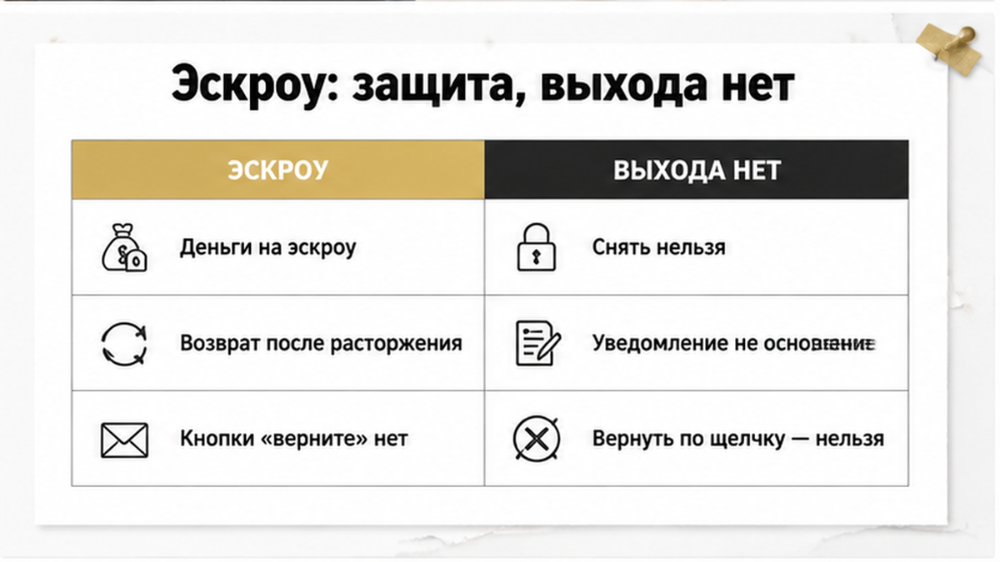
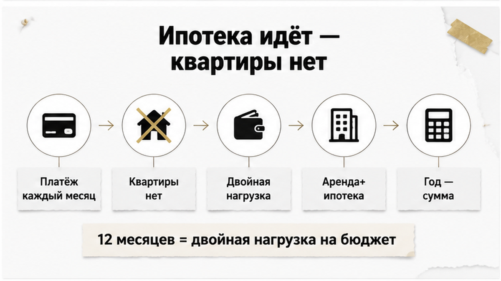
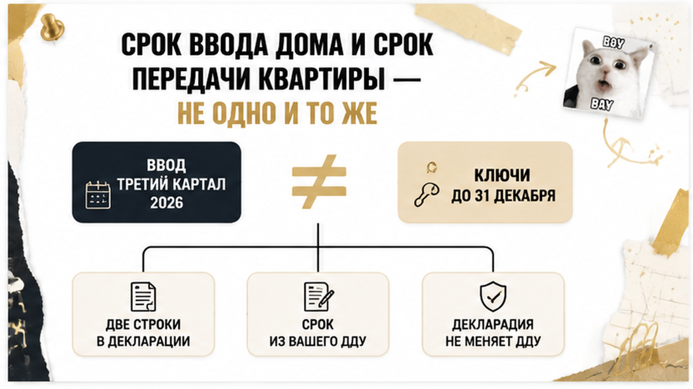

Двадцать седьмого августа тюменские СМИ пересказывали свежую проектную декларацию: у первого арендного дома на Защитников Отечества, 36 ввод — третий квартал 2026-го, а ключи жильцам — до 31 декабря. Две строки в одном документе, разрыв между ними в месяцы, и почти никто в комментариях этого разрыва не заметил. А у меня в тот же день был разговор совсем другой температуры — не про арендный дом, а про обычную тюменскую семью с ДДУ, эскроу и ипотекой, которой за три недели до выдачи ключей пришло письмо: передача переносится на год. Первая фраза в трубке звучала так: «Деньги же на эскроу, мы их просто заберём и купим другую квартиру». Не заберут — и вот это открытие обычно дороже самого переноса. Дальше разбираю собирательный сюжет, смоделированный из похожих обращений: без фамилий, адреса корпуса, банка и суммы, потому что чужую сделку поимённо я не пересказываю, а механика в таких письмах у всех одинаковая.
Я Святослав Шакин, The Риэлтор, Тюмень. Сроки ДДУ, эскроу и ипотечные последствия переносов разбираю каждый рабочий день. Если уведомление о переносе уже лежит перед вами — напишите до того, как подпишете допсоглашение: Telegram или MAX.
В моделируемом сюжете всё шло по учебнику. Квартира в строящемся доме, ДДУ, деньги на эскроу-счёте, одобренная ипотека. В договоре стояла не «ориентировочная сдача», а конкретная договорная дата передачи объекта — та самая, от которой потом считается вообще всё.
Под эту дату люди подстроили жизнь. Ремонт спланировали заранее, садик присмотрели по будущей прописке, аренду собирались освобождать в конце срока.
За три недели до ожидаемых ключей пришло уведомление: передача переносится на двенадцать месяцев. Не на месяц, не на квартал — на год. Письмо вежливое, с объяснением про графики и подрядчиков, и с приложением: подпишите, пожалуйста, дополнительное соглашение о новом сроке.
Вот здесь и начинается настоящая развилка, а не та, которую видят из окна кухни.
Уведомление о переносе — это не изменение договора. Уже заключённый ДДУ меняется только подписанным сторонами соглашением, и никакая новая дата в проектной декларации вашу договорную дату сама по себе не переписывает. Застройщик сообщил о намерениях. Ваш договор пока живёт по старой дате.
Новость двойная. Хорошая: письмом ваши права не обнулили. Плохая: юридически значимая просрочка ещё не наступила, а ждать вы уже начали — фактически.
Механика знакомая: красивое обещание по срокам звучит на этапе выбора, а риск проявляется потом, когда деньги уже внесены. Я разбирал похожую природу проблемы в истории, где скидку в два миллиона обещали, а в квартире прятали риск. Сценарий другой, вывод тот же: проверять надо до денег, а не после письма.

Эскроу придумали ровно для того, чтобы застройщик не мог распоряжаться вашими деньгами до исполнения обязательств. Это работает.
Но у той же конструкции есть вторая сторона, которую в отделах продаж проговаривают редко: свободно снять свои деньги по собственному желанию дольщик тоже не может.
Основания для закрытия счёта и возврата средств завязаны на договор эскроу и 214-ФЗ: расторжение ДДУ, регистрация прекращения договора, иные предусмотренные законом обстоятельства. Пока ДДУ действует — деньги лежат. Они ваши, но заблокированы в конструкции сделки. Уведомление о переносе на год в этот перечень оснований не входит. Кнопки «передумал, верните» там нет.
Второй момент, который стоит услышать заранее. Даже когда возврат происходит, банк-эскроу возвращает сумму со счёта — цену ДДУ в пределах фактически внесённых средств. Не «все понесённые расходы».
Неустойку за просрочку передачи банк-эскроу не выплачивает вообще. Это отдельное требование к застройщику, со своим расчётом и своей судьбой в суде.
А если дом уже введён и деньги с эскроу перечислены застройщику — забирать их придётся не через банк, а через претензию и, скорее всего, через суд к самому застройщику. Совсем другая длительность истории.
По ощущению для покупателя это очень похоже на кейс, где расписку на квартиру написали, а денег на счёте нет: формально зафиксировано всё, а быстрого выхода из сделки не существует. Деньги есть. Доступа к ним прямо сейчас — нет.

Самая болезненная часть переноса — не эмоции, а арифметика.
Ипотечный платёж продолжает начисляться, пока кредитный договор не исполнен или не изменён в установленном банком порядке. Письмо застройщика на график не влияет никак: банк деньги выдал, деньги ушли на эскроу, обязательство действует.
Дальше складывается двойная нагрузка. Семья платит ипотеку за квартиру, которой ещё нет, и одновременно — за жильё, где живёт сейчас. Год в таком режиме — это уже не «немного подождём», это сумма, которую нужно закладывать в решение.
Поэтому вариант «просто подождём» принимается с калькулятором, а не по инерции. Иногда ждать действительно дешевле. Иногда — нет, и это видно только в цифрах.
И сразу предупреждаю про иллюзию, которую слышу чаще всего: возврат средств с эскроу при расторжении не означает, что ипотека автоматически закрылась. Кредит живёт по своему календарю — об этом отдельно ниже, там есть неприятные детали про маршрут денег.
Дальше — тот вариант, который в Тюмени в такой ситуации выглядит самым реалистичным. Ещё раз проговорю: это моделируемый финал, а не пересказ конкретного дела. Без фамилий, без адреса корпуса, без суммы и номера производства. Но порядок шагов везде один, и он важнее любых частных цифр.
Шаг первый — письменная претензия застройщику. Не звонок менеджеру и не сообщение в чат дома. Бумага, в которой зафиксированы дата получения уведомления, пункт ДДУ со сроком передачи именно вашей квартиры и конкретное требование.
Дальше развилка. Договорились — расторжение по соглашению сторон, оформленное документами. Не договорились, а договорная дата передачи прошла больше чем на два месяца — односторонний отказ по основаниям части 1 пункта 1 статьи 9 214-ФЗ.
И вот тут покупатели обычно выдыхают: «всё, подписали, ждём деньги». Нет. Расторжение не заканчивается подписью на бумаге. Нужна регистрация прекращения ДДУ, и только когда сведения об этом появятся в ЕГРН, у банка возникает основание закрывать эскроу. Без этой записи счёт не двинется ни на рубль.
Теперь про сумму — трезво, без утешений. Банк-эскроу возвращает цену ДДУ в пределах фактически внесённых средств. Не «все понесённые расходы». Проценты, уже уплаченные по ипотеке за месяцы ожидания, аренда съёмной квартиры на этот период, неустойка за просрочку — это отдельные требования с отдельной судьбой. Неустойку банк-эскроу не платит вообще: её взыскивают с застройщика.
Ещё одна деталь, о которой узнают в последний момент. Возврат может уйти не на вашу карту, а на залоговый счёт банка-кредитора — это зависит от условий ипотечного и банковского договоров.
И отдельный сценарий, самый неприятный: дом уже введён, деньги с эскроу перечислены застройщику. Тогда «кнопки возврата» в банке нет в принципе. Возврат идёт через претензию и, при отказе, через суд к застройщику. По длительности это совсем другая история, чем возврат из ещё не раскрытого эскроу.

Ошибка номер один — и самая массовая. Человек слышит «дом сдают в третьем квартале» и мысленно ставит на календарь дату новоселья. Дальше под эту дату едет ремонт, детский сад и конец аренды.
Это две разные вещи. Ввод объекта в эксплуатацию — про дом. Срок передачи объекта долевого строительства — про вашу квартиру и ваш договор. Дом может быть введён раньше даты передачи, а может позже. Для расчёта просрочки и для любых требований к застройщику значение имеет только договорная дата передачи из ДДУ.
Тот же принцип виден и в свежей тюменской новости про арендный дом на Защитников Отечества, 36: ввод в III квартале 2026-го, ключи — до 31 декабря. Две строки в одной декларации, разрыв в месяцы. «Сдали» и «пустили в квартиру» — не синонимы.
Второе. Новая дата в проектной декларации ваш уже заключённый ДДУ не переписывает. Уведомление застройщика — тоже. Договор меняется только подписанным сторонами соглашением. Пока подписи нет, ваш срок передачи — тот, что в договоре, каким бы неактуальным он ни выглядел на фоне стройплощадки.
Буклеты, скриншоты сайта, переписку с менеджером — сохраняйте. Это дополнительное доказательство ожиданий сторон. Но ДДУ они не заменяют: в споре суд читает договор. Как красивое обещание живёт отдельно от документа, я разбирал в истории про обещанную скидку и спрятанный риск — там вторичка, а природа проблемы одна и та же.
А вот открытие, которое расстраивает тех, кто уже мысленно забрал деньги с эскроу и листает объявления по другим домам. Письмо застройщика о переносе передачи на год — не основание для немедленного одностороннего отказа от ДДУ.
Закон устроен иначе. По части 1 пункта 1 статьи 9 214-ФЗ дольщик вправе отказаться от исполнения договора, если застройщик нарушил срок передачи объекта более чем на два месяца. Ключевое слово — «нарушил». Просрочка должна быть фактической. Пока ваша договорная дата не наступила, юридически значимой просрочки нет — каким бы честным ни было предупреждение.
Получается парадокс: уведомление приходит раньше, чем у вас появляется право выйти. Вы уже всё знаете, а инструмента в руках ещё нет.
Последствия прямые. Отказ, заявленный до наступления установленной законом просрочки, застройщик может оспорить. И тогда вы окажетесь не в позиции «жду возврат», а в позиции «доказываю, что мой отказ был правомерным». Разница — в месяцах и в нервах.
Пока фактической просрочки нет, рабочих сценариев два. Первый — переговоры и расторжение по соглашению сторон. Второй — ждать договорную дату, фиксируя каждый документ. Мгновенный возврат с эскроу по одному письму вам не пообещает ни один честный специалист: счёт закрывается по основаниям договора эскроу и 214-ФЗ, а уведомление о переносе в этот перечень не входит.
И про допсоглашение к уведомлению: не подписывайте на автомате под «у нас все уже подписали». Новая дата в допсоглашении переносит точку просрочки, право на односторонний отказ и расчёт неустойки. Решение — только после разбора текста, не в переговорной.
Первый вопрос после письма о переносе всегда один и тот же: «Ну хоть неустойка-то мне капает?»
Отвечаю аккуратно, потому что 2026 год здесь устроен сложнее двух предыдущих. Мораторий по постановлению Правительства РФ № 326 работал с 22 марта 2024 года по 31 декабря 2025 года. Дни просрочки, попавшие в этот отрезок, из расчёта просто вычитаются. Это не прощение долга застройщика в целом — это дыра в формуле, вырезанная календарём.
С 1 января 2026 года новая просрочка считается по общему правилу части 2 статьи 6 214-ФЗ: 1/300 ключевой ставки от цены договора за каждый день, а гражданину — в двойном размере. И считается она не от даты ввода дома и не от строки в проектной декларации, а от договорной даты передачи вашей квартиры. Пока эта дата не наступила, начислять нечего. Хоть десять писем придёт.
Ещё нюанс: ПП РФ № 2227 отсрочило исполнение «старых» требований по неустойке до 31 декабря 2026 года. «Присудили» и «пришло на счёт» — разные даты. Отсрочка по старым требованиям — не отмена новой неустойки за просрочку 2026 года.
К этому добавьте ещё две вещи. Суд вправе уменьшить неустойку по статье 333 ГК РФ, если сочтёт её несоразмерной. И штраф за то, что застройщик не удовлетворил требование добровольно, — отдельное требование: его заявляют, а не ждут, что оно приложится само. И повторю про эскроу: банк-эскроу неустойку не платит. Он держит и возвращает цену договора. Неустойка — это разговор с застройщиком.
Как иллюстрация судебной логики — апелляционное определение Алтайского краевого суда от 10 июля 2024 года № 33-673/2024: «присудили» и «пришло на счёт» — две разные даты.
Самая дорогая иллюзия во всей этой истории звучит так: «Расторгнем ДДУ — и ипотека отвалится».
Не отвалится. Расторжение договора долевого участия не прекращает кредитный договор автоматически. Платёж начисляется, пока кредит не исполнен или не изменён в том порядке, который предусмотрел банк. Вы регистрируете прекращение ДДУ, ждёте закрытия эскроу, пишете письма — а график живёт своей жизнью и ваши обстоятельства уважительными не считает.
Второй вопрос — маршрут денег. Возврат с эскроу может уйти не вам на карту, а на залоговый счёт банка-кредитора: зависит от условий ипотечного и банковского договоров. Поэтому до подачи документов на расторжение я всегда прошу сходить в банк-кредитор и спросить прямо: куда придут средства, какой пакет нужен для досрочного погашения, что происходит с залогом и обременением. Разговор на десять минут, который экономит месяцы.
И про сумму — трезво. С эскроу возвращают цену ДДУ в пределах фактически внесённых средств. Не «все ваши расходы». Проценты, уплаченные за месяцы ожидания, страховки, аренда съёмного жилья — отдельная оценка и отдельные требования, сами по себе они на счёте не появятся. Возврат эскроу не гарантирует полного закрытия ипотеки: итог зависит от остатка долга и условий кредита. Конкретные тарифы и комиссии называть не буду — их уточняют официально в своём банке, а не в пересказе соседа.
Логика ровно та же, что в истории, где ипотеку одобрили, а регистрацию остановили из-за строки в ЕГРН: сделка встала, а кредитные обязательства идут по своему календарю и спора не ждут.
Теперь практика — то, что я прошу собрать до любого решения: подписывать допсоглашение, ждать или заявлять отказ. Пока этих бумаг нет на столе, любой совет будет гаданием.
| Документ | Что смотрю в первую очередь | Какой вывод он даёт | Где взять |
|---|---|---|---|
| ДДУ и приложения | Пункт со сроком передачи именно вашей квартиры, порядок изменения срока | Отправная дата для просрочки и всех расчётов | Свой экземпляр, выписка ЕГРН по договору |
| Уведомление застройщика | Дата отправки и дата получения, что именно предлагают подписать | Это информирование или проект изменения договора | Почта, личный кабинет, курьерская отметка |
| Проектная декларация | Актуальная версия и дата обновления | Сигнал о сдвиге ввода — но не замена условия ДДУ | ЕИСЖС, сайт застройщика |
| Договор эскроу и справка банка | Основания закрытия счёта, фактически внесённая сумма | При каком событии деньги вообще двинутся | Банк-эскроу |
| Ипотечный договор и график | Порядок досрочного погашения, реквизиты для возврата | Что будет с кредитом после расторжения | Банк-кредитор |
| Переписка и реклама | Обещания сроков, ответы менеджеров, объявления | Дополнительное доказательство — но не вместо ДДУ | Скриншоты, почта, мессенджеры |
Порядок действий, когда письмо о переносе уже пришло:
И типичные ошибки, которые я вижу чаще всего:
Если застройщик переносит сдачу на год — вы ждёте или сразу требуете расторжение и возврат денег с эскроу? Напишите в комментариях, что выбрали бы вы и почему: по тюменским новостройкам опыт у людей очень разный, и чужой сценарий тут стоит дороже любого юридического обзора.
Разбираю такие письма по вашим документам — без паники и без обещаний «вернём всё за неделю». Пишите в Telegram или в MAX: скину список из шести бумаг, с которых начинается любой нормальный разговор с застройщиком.
И последнее ограничение — проговорю прямо. Сюжет собирательный, без адреса корпуса, суммы и номера производства: уведомление → договорная дата → просрочка → претензия → расторжение → регистрация прекращения ДДУ → эскроу и банк. Ваш случай будет отличаться в деталях — а детали здесь и решают исход.
Материал проверен: Святослав Шакин, личный риэлтор в Тюмени. Ориентир для покупателя, не индивидуальная юридическая консультация.